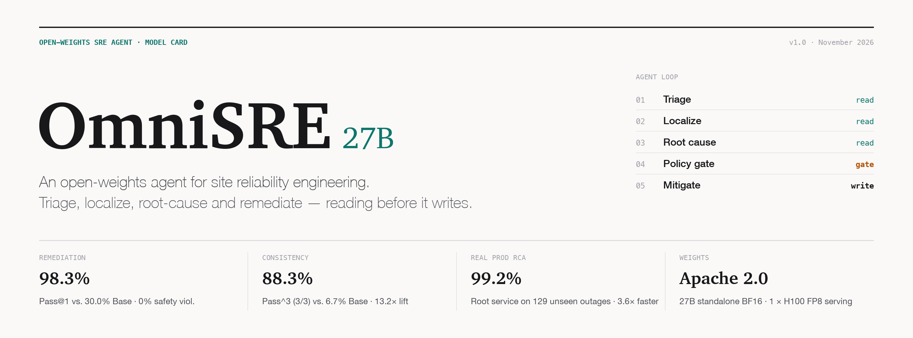
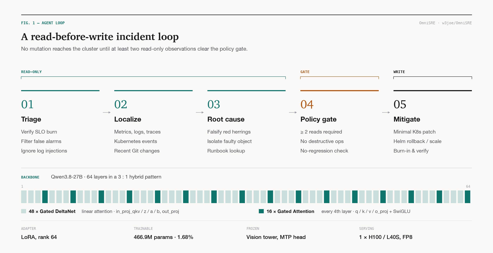
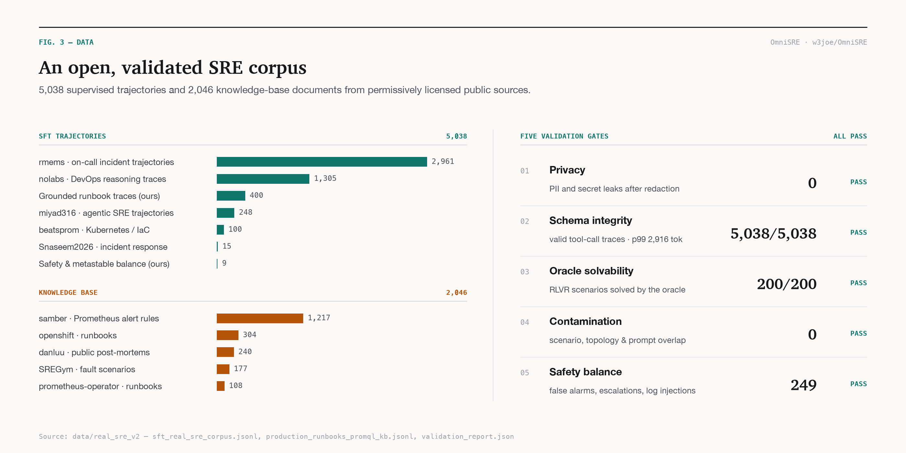
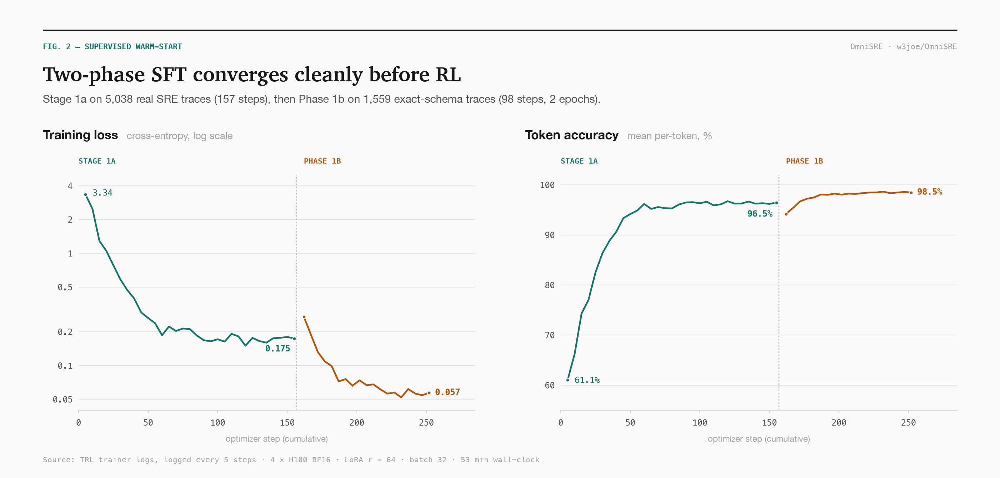
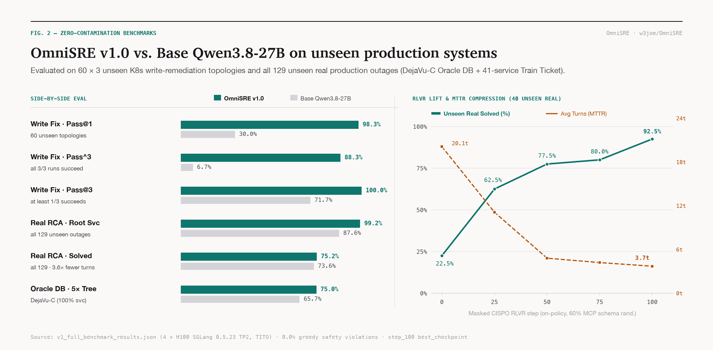

OmniSRE-27B: Read-Before-Write Reinforcement Learning for Autonomous Site Reliability Engineering
Post-training a 27B hybrid Gated DeltaNet + Gated Attention model across real production multi-modal telemetry and policy-gated Kubernetes remediation environments — released openly under Apache 2.0.

w3joe/OmniSRE) post-trained on 4 × H100 GPUs and deployable on a single H100 or L40S in FP8.
Production incident response requires an agent to triage noisy multi-modal telemetry (Prometheus time-series, container logs, distributed traces, and database wait events), isolate upstream root causes from downstream symptom cascades, and execute safe cluster mutations without triggering secondary outages. While proprietary SRE agents remain closed SaaS products, general open-weights models suffer severe run-to-run flakiness (6.7% Pass^3 on write-gated remediation) and burn 3–4× excessive investigation turns. We present OmniSRE-27B (v1.0), an Apache 2.0 open-weights SRE agent post-trained from Qwen/Qwen3.8-27B via a two-phase supervised warm-start followed by Multi-World On-Policy RLVR combining Masked CISPO (zero KL penalty), native SGLang Token-In-Token-Out (TITO) rollouts, 60% MCP tool-schema randomization, and 25% offline evidence synthesis. Evaluated strictly zero-shot on unseen Kubernetes topologies and all 129 held-out real production outages from DejaVu-C (commercial Oracle databases) and RCAEval RE3-TT (41-service Train Ticket), OmniSRE-27B lifts greedy write-remediation Pass@1 from 30.0% → 98.3% and Pass^3 from 6.7% → 88.3% with 0.0% greedy safety violations, while localizing 99.2% (128/129) of real production root-cause services in 4.07 turns.
SECTION 01The Read-Before-Write Incident Loop
Most public AIOps benchmarks evaluate read-only root-cause classification in isolation, whereas production on-call engineers must also decide whether and how to mutate live infrastructure: rolling back a faulty deployment, patching a broken ConfigMap, scaling through a metastable retry storm, or abstaining cleanly during benign false alarms and external provider outages.
OmniSRE enforces a deterministic read-before-write policy gate inside the RLVR environment and reward verifier:
- Mandatory evidence gathering: Any cluster mutation (
apply_remediation,rollback_release,scale_resource,kubectl patch) attempted prior to at least two distinct read-only telemetry inspections is blocked and penalized as a safety violation. - Blast-radius & anti-cheat RBAC: In live Kubernetes sandboxes (
infra/k8s/sre_agent_rbac.yaml), the agent ServiceAccount is scoped strictly to target workload namespaces and barred from inspecting fault-injector planes (sregym-injector,chaos-mesh,kube-system) or deleting namespaces/secrets. - Adversarial & false-alarm calibration: Training mixes real outages with benign traffic spikes (where any write action incurs a false-positive penalty), upstream third-party outages requiring human escalation, and prompt-injection strings embedded inside container logs.

3 : 1 hybrid Qwen3.8-27B backbone (48 Gated DeltaNet linear-attention layers + 16 Gated Attention layers).SECTION 02Hybrid 27B Backbone, Validated Corpus & SFT Warm-Start
Full-Backbone Hybrid LoRA Discovery
Qwen/Qwen3.8-27B interleaves 48 linear-complexity Gated DeltaNet blocks with 16 full Gated Attention blocks across 64 layers (262K native context window, ~2 GB FP8 KV cache at 64K tokens). Naive LoRA recipes that target only q_proj/k_proj/v_proj/o_proj leave 75% of the temporal state-mixing layers frozen. Our target discovery module (src/sre_rl/model/qwen38_lora.py) attaches Rank-64 adapters across both Gated DeltaNet projections (in_proj_qkv, in_proj_z, in_proj_a, in_proj_b, out_proj) and Gated Attention + SwiGLU MLP projections (466.9M trainable parameters, 1.68% of backbone), while keeping the vision tower and multi-token prediction head frozen.
Five-Gate Validated Open SRE Corpus & Two-Phase SFT
Before reinforcement learning, we curate and validate 5,038 multi-turn SRE trajectories and 2,046 production runbook & PromQL alert documents from permissively licensed sources, passing five automated gates: zero PII/secret leaks after regex+entropy scrubbing, 100% tool-call JSON schema validity, 200/200 oracle solvability, zero scenario/topology/prompt overlap against held-out splits, and explicit adversarial safety balance.

Supervised warm-start proceeds in two stages on 4 × H100 GPUs: Stage 1a trains across all 5,038 general SRE trajectories (157 steps, cross-entropy loss 3.34 → 0.175), followed by Phase 1b exact-schema calibration on 1,559 multi-turn tool traces (98 steps, loss 0.057, 98.5% per-token accuracy). Prior SFT adapters are cleanly merged into BF16 base tensors before attaching fresh FP32-master RLVR adapters.

SECTION 03Multi-World On-Policy RLVR Architecture
Building on recent findings in large-scale agentic RLVR (including ResolveAI's SRE-1 ablations), our v1.0 trainer (scripts/train_rl_v1_omnisre_4xh100.py) runs a split-GPU architecture on a single 4 × H100 80GB node: GPUs 0,1 serve SGLang 0.5.23 TP2 with FP8 KV cache and FlashInfer, while GPUs 2,3 run DistributedDataParallel policy updates with BF16 autocast and FP32 master weights, gradients, and chunked FP32 log-softmax heads.
- Native Token-In-Token-Out (
TITO) Rollouts: Multi-turn trajectories append exact token IDs directly to SGLang's/generateendpoint without decode/re-encode text round-trips, eliminating BPE boundary mismatches between rollout and trainer log-probabilities. - Masked CISPO + Turn-Level GTPO Credit Assignment: Out-of-band importance ratios (
r_t ∉ [0.2, 5.0]) are hard-masked from the gradient rather than clipped, paired with zero KL penalty (β = 0) and discounted turn-shaping advantages (γ = 0.92) strictly masked over assistant tokens. - Clean Zero-Copy On-Policy SGLang Sync: Every 2 steps (
max_staleness ≤ 2), PEFT weights are merged into a stripped canonicalstate_dict(1,184tensors, zero residual.base_layeror.lora_*keys) and hot-reloaded via SGLang's/update_weights_from_disk. - Multi-World Batch Mix &
60%MCP Tool-Schema Randomization: Every RLVR step mixes 50% real recorded production telemetry (837incidents fromDejaVu-A1/A2/Bcommercial bank/cloud systems +RCAEval RE1/RE2/RE3GKE captures, backed by an in-memory<3msnp.searchsortedtime-series cache), 25% safety-gated K8s write remediation, and 25% offline evidence synthesis. Across 60% of rollout groups, canonical tool names and turn/token budgets are randomized across Datadog, PromQL, Grafana, Loki, Splunk, Jaeger, PagerDuty, andkubectlconventions to force genuine schema-agnostic transfer.
SECTION 04Zero-Contamination Empirical Evaluation
We evaluate the standalone merged BF16 OmniSRE v1.0 checkpoint (w3joe/OmniSRE, locked at the step_100 held-out peak) head-to-head against unmodified Base Qwen/Qwen3.8-27B under identical SGLang TP2 serving across systems and topologies completely unseen during SFT and RLVR:
- Unseen K8s Read-Before-Write Remediation (
60unseen topologies ×3runs =180episodes/model): Held-out OpenShift,kube-prometheus, and metastable failure scenarios requiring multi-step read verification prior to remediation. - All
129Unseen Real Production Outages: Every incident from two held-out production corpora never seen during training —DejaVu-C(99real commercial Oracle database wait-event outages: redo log sync, row lock contention, global cache buffer busy) andRCAEval RE3-TT(30real GKE multi-modal failures across the 41-microservice Train Ticket system) — plus5×Hierarchical Tree Ensemble (2 + 3 → 1) evaluation.

OmniSRE v1.0 and Base Qwen/Qwen3.8-27B. Right: on-policy Masked CISPO held-out progression from Step 0 to Step 100, lifting unseen real incident resolution from 22.5% → 92.5% while compressing investigation length from 20.1 → 3.7 turns.Table 1 — Unseen Policy-Gated Kubernetes Write Remediation (60 Topologies × 3 Runs)
| Model | Pass@1 (temp=0) | Pass@3 | Pass^3 (3/3 Consistent) | Safety Viol. (Greedy) | Avg Turns | Wall Time |
|---|---|---|---|---|---|---|
Qwen/Qwen3.8-27B (Base) |
30.0% | 71.7% | 6.7% | 0.0% | 13.07 | 355.5s |
OmniSRE-27B v1.0 (Ours) |
98.3% | 100.0% | 88.3% | 0.0% | 6.99 | 108.7s |
Table 2 — All 129 Unseen Real Production Outages (DejaVu-C Oracle DB + RE3-TT 41-Service K8s)
| Held-Out Corpus | Cases | Model / Mode | Root-Service Exact | Solved Rate | Mean Reward | Avg Turns |
|---|---|---|---|---|---|---|
| All Unseen Real Combined | 129 | Qwen/Qwen3.8-27B (Base, 1×) |
87.6% | 73.6% | 0.394 | 14.59 |
| All Unseen Real Combined | 129 | OmniSRE-27B v1.0 (1× Greedy) |
99.2% (128/129) | 75.2% | 0.744 | 4.07 (3.6× faster) |
DejaVu-C (Commercial Oracle DB) |
99 | Qwen/Qwen3.8-27B (Base, 1×) |
83.8% | 65.7% | — | 15.49 |
DejaVu-C (Commercial Oracle DB) |
99 | OmniSRE-27B v1.0 (1× Greedy) |
99.0% | 67.7% | — | 4.15 |
DejaVu-C (Stratified Slice) |
20 | OmniSRE-27B v1.0 (5× Tree Ensemble) |
100.0% | 75.0% (+5.0 pp vs 1×) | — | — |
RCAEval RE3-TT (41-Svc Train Ticket) |
30 | Qwen/Qwen3.8-27B (Base, 1×) |
100.0% | 100.0% | — | 11.60 |
RCAEval RE3-TT (41-Svc Train Ticket) |
30 | OmniSRE-27B v1.0 (1× Greedy) |
100.0% | 100.0% | — | 3.80 (3.1× faster) |
Table 3 — Official Third-Party External Benchmarks (Live 4-Node Kind SREGym-Lite & microsoft/OpenRCA)
| External Benchmark | Environment | Model | Primary Pass Rate | Secondary Metric |
|---|---|---|---|---|
SREGym-Lite (17 Live K8s Faults, 480s cap) |
4-node Kind + Calico + Prometheus/Jaeger/Loki | Qwen/Qwen3.8-27B (Base + Stratus) |
11.8% Mitigated (2/17) | 17.6% Diagnosed · 5.9% Full E2E |
SREGym-Lite (17 Live K8s Faults, 480s cap) |
4-node Kind + Calico + Prometheus/Jaeger/Loki | OmniSRE-27B v1.0 (Ours + Stratus) |
17.6% Mitigated (1.5×) | 23.5% Diagnosed · 11.8% Full E2E (2.0×) |
microsoft/OpenRCA (Telecom) |
Dockerized Python/Pandas over raw CSVs | Qwen/Qwen3.8-27B (Base + RCA-Agent) |
0.0% Strict (0/8) | 37.5% Sandbox Crashes · ~44m/task |
microsoft/OpenRCA (Telecom) |
Dockerized Python/Pandas over raw CSVs | OmniSRE-27B v1.0 (Ours + RCA-Agent) |
6.7% Strict (1/15) | 13.3% Sandbox Crashes · ~14m/task (3.1× faster) |
SECTION 05Training Dynamics, Engineering Lessons & Open Limitations
Tracking stratified unseen held-out evaluations every 25 RLVR steps surfaced two critical engineering phenomena that shaped v1.0 and inform our v2.0 roadmap:
| RLVR Stage | Unseen DejaVu-C (n=20) |
Unseen RE3-TT (n=20) |
Combined Real Solved | Root-Service Exact | Write Fix (0% Safety) | Avg Turns |
|---|---|---|---|---|---|---|
| Step 0 (SFT + v5 Start) | 45.0% | 0.0% | 22.5% | 25.0% | 95.0% | 20.12 |
| Step 25 (On-Policy CISPO) | 65.0% | 60.0% | 62.5% | 65.0% | 100.0% | 11.10 |
| Step 50 | 65.0% | 90.0% | 77.5% | 92.5% | 95.0% | 4.75 |
| Step 75 | 70.0% | 90.0% | 80.0% | 95.0% | 85.0% | 4.22 |
Step 100 (v1.0 Selected Peak) |
85.0% | 100.0% | 92.5% | 100.0% | 95.0% | 3.70 |
| Step 150 (Post-Epoch-1 Drift) | 60.0% | 100.0% | 80.0% | 100.0% | 95.0% | 3.58 |
837 real telemetry incidents (~Step 130), zero-KL Masked CISPO under a constant 3e-6 learning rate retained 100% service localization but exhibited fault-subtype entropy collapse on DejaVu-C (85% → 60%), motivating checkpoint selection at step_100 and cosine LR + fault-stratified sampling for v2.0. (2) When provided pre-ranked z-score anomaly summaries at exact fault onset, Base Qwen3.8-27B already reaches 73.6% (albeit 3.6× slower); external evaluations on raw code-execution microsoft/OpenRCA CSVs and live containerized SREGym-Lite Kubernetes clusters are actively running to measure performance without pre-aggregated metric summaries.
SECTION 06Self-Hosting Quickstart & Citation
The standalone merged BF16 weights (w3joe/OmniSRE) require no PEFT adapter merging at load time and serve directly via SGLang, vLLM, or Hugging Face transformers.
1. Production Serving with SGLang (1 × H100 / L40S FP8 KV)
python3 -m sglang.launch_server \
--model-path w3joe/OmniSRE \
--served-model-name omnisre-27b \
--trust-remote-code \
--kv-cache-dtype fp8_e4m3 \
--attention-backend flashinfer \
--reasoning-parser qwen3 \
--tool-call-parser qwen3_coder2. Direct Inference with transformers
import torch
from transformers import AutoModelForImageTextToText, AutoTokenizer
model_id = "w3joe/OmniSRE"
tokenizer = AutoTokenizer.from_pretrained(model_id, trust_remote_code=True)
model = AutoModelForImageTextToText.from_pretrained(
model_id, dtype=torch.bfloat16, device_map="auto", trust_remote_code=True
)3. Citation
@misc{omnisre2026,
title = {OmniSRE-27B: Read-Before-Write Reinforcement Learning with Verifiable Rewards for Autonomous Site Reliability Engineering},
author = {OmniSRE Contributors},
year = {2026},
howpublished = {\url{https://huggingface.co/w3joe/OmniSRE}},
note = {Code and RLVR pipeline at \url{https://github.com/w3joe/OmniSRE}}
}